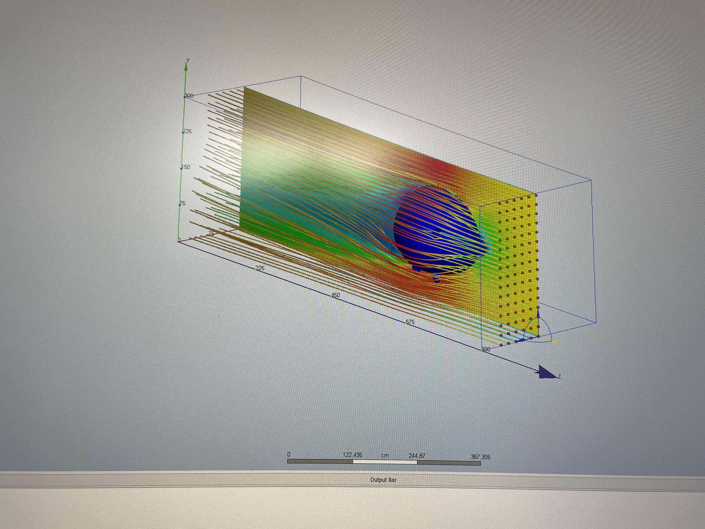

Creating a table for the tunnel console of my car and vinyl cutting an Audi logo.
A CFD analysis of the Bónus Pig
In 2021 I started playing around making surface models in Autodesk Inventor. This recreation of the Bónus pig, here below is a product of that learning. You can move it around in 3D space:
The CFD analysis
Later that year I wanted to know how to set of a CFD analysis using Autodesk CFD. The object that I used for my learning of that software was this Bónus Pig. Below you can see screenshots of this Pig using Autodesk CFD. The picture below shows pressure changes of the air around the pig with a view of the side and the picture below shows the same resaults except in a different position. I did not calculate the coefficient of drag for the Pig or any further calculations.

